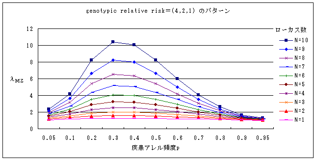
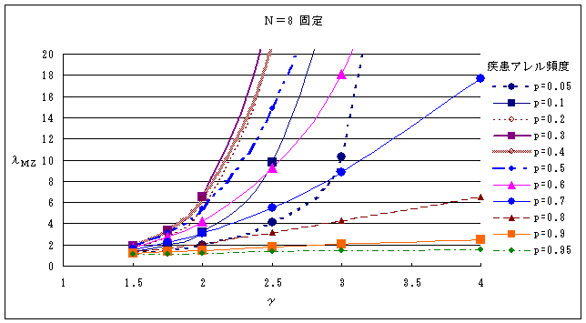

2-4 参考 どの程度の強さの疾患関連遺伝子がいくつくらいあるか
遺伝性の要因の存在が予想され、かつ複数の遺伝子の関与が予想されている疾患が我々の研究の対象である。しかも個々の遺伝子の、寄与の強さが、我々の研究の成否を相当程度規定していることは“2 遺伝性疾患であることの確認”及び“3-3-2 関連解析の検定力に影響を与える因子”を参照するとわかる。
ではλＭＺやλｓｉｂが知られている場合に、一体どのくらいの数の遺伝子がどのくらいのgenotypic risk ratioを持っていると考えればよいのであろうか？
一般に、common diseasesと呼ばれる疾患の関連遺伝子が有するgenotypic risk ratioはせいぜい高くても4くらいまでであろうと考えられている(“2-1
遺伝性疾患であることの確認”参照)。これは、これまでの疾患関連遺伝子検出の歴史から推定されている。というのは、相当数の罹患同胞対を用いたlinkage
analysisでは、これより高いgenotypic risk ratioを持つ主要ローカスはすでに検出されていてしかるべきであるのに、検出されていないということは、それよりもgenotypic
risk ratioが低いローカスしか存在しないということを示唆していると考えるべきだからである。
では、genotypic risk ratioがそれほど高くない遺伝子がいくつくらい集まると、われわれが疫学的に知っているλの値が得られるのであろうか？
以下のグラフは、簡略化のために、アレル頻度もgenotypic risk ratioも同一の遺伝子が、複数個、相互に独立に疾患susceptibilityを上昇させていると仮定した上で、その場合にλＭＺがいくつくらいになるかを表している。
実際には異なるアレル頻度の遺伝子がそれぞれ異なるgenotypic risk ratioを持ち、さらに関連遺伝子同士が独立ではなく、組合せによって複雑にgenotypic risk
ratioを変化させることが予想されるので、このシミュレーションから関連遺伝子の数やそのアレル頻度・genotypic risk ratioを予見することはできないが、genotypic
risk ratioと遺伝子の数について大雑把なイメージをつかむ役には立つと思われる。
グラフの他に、UNIX上のプログラム(Nlamgam-input.pl)では、任意のローカス数(13程度まで)、任意のアレル頻度、任意のgenotypic
risk ratio、任意の遺伝形式を指定して、その場合のλＭＺが算出できる。
図1は、genotypic
risk ratio＝2で、genotypic relative riskの型がγ２型のローカス(genotypic relative
risk が疾患アレルホモ4、ヘテロ2)が複数存在する場合をシミュレートしている。ローカス数は１から10個とし、お互いに独立に疾患susceptibilityを上昇させている場合である。全てのローカスの疾患アレル頻度も同一であると仮定している。
例えば疾患アレル頻度が0.3のローカスが10個合わさっているような疾患ではλＭＺが10を少し越えるくらいになることがわかる。
図2は、ある共通の疾患アレル頻度とgenotypic
risk ratioを持つγ２型のローカスが8個集まって疾患susceptibilityを決めているという仮定をしたときに、そのgenotypic
riskがいくつくらいであると、ある与えられたλＭＺに到達するかをシミュレートしている。
p＝0.6(ピンクの▲)のグラフを例にとる。genotypic
risk ratioが1.5や2の遺伝子が8個集まってもλＭＺは2や4に過ぎない。しかしながらgenotypic risk ratioが2.5、3と上昇するとλＭＺ急速に上昇し、それぞれ9超、18と高くなる。このレベルは遺伝性が確認されているcommon
diseaseに珍しくない数値である。
図1
図2
カウンタ